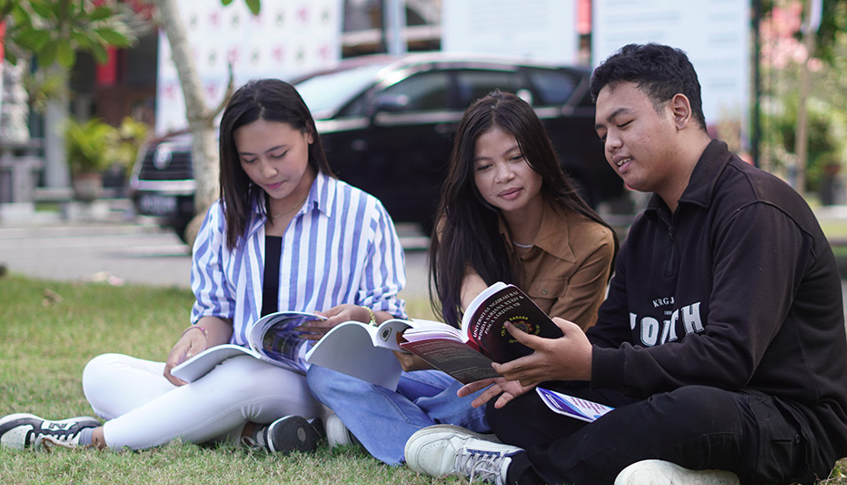

Tentang Universitas Ngurah Rai
Berani sejak dari nama. Seimbang dalam setiap langkah.
Universitas swasta tertua kedua di Bali — didirikan Yayasan Jagadhita Denpasar pada 23 Mei 1979 untuk membuka akses pendidikan tinggi berkualitas dan terjangkau.
Visi 2040
Arah jangka panjang yang tertulis di Statuta UNR
“Menjadi lembaga pendidikan tinggi yang menghasilkan sumber daya manusia yang kompeten dan berdaya saing dalam ilmu pengetahuan dan teknologi yang berlandaskan kerakyatan dan Tri Hita Karana pada tahun 2040.”
Diferensiasi misi resmi UNR: Pusat Pendidikan Tinggi Unggul Berbasis Nilai Tri Hita Karana yang Inklusif, Inovatif, dan Berdaya Saing Global.
Unggul
Kualitas yang melampaui standar minimum, dibuktikan dengan akreditasi dan rekognisi.
Berbasis Tri Hita Karana
Membentuk karakter yang menjaga hubungan dengan Tuhan, sesama, dan lingkungan.
Inklusif
Terbuka bagi seluruh lapisan masyarakat, tanpa diskriminasi ekonomi, sosial, atau budaya.
Berdaya Saing Global
Kemitraan dan kurikulum yang menyiapkan lulusan untuk pasar kerja nasional maupun internasional.
Misi
Tiga misi resmi penyelenggaraan UNR
- Menyelenggarakan pendidikan, penelitian, dan pengabdian masyarakat yang mengacu pada standar nasional pendidikan tinggi.
- Mengembangkan kepribadian yang tanggap terhadap peningkatan harkat dan martabat manusia dengan menjunjung tinggi nilai-nilai Tri Hita Karana.
- Membangun kerja sama dengan institusi dalam dan luar negeri untuk mengoptimalkan Tridharma Perguruan Tinggi yang menjunjung Tri Hita Karana.
Filosofi Inti
Apa itu Tri Hita Karana?
Tiga hubungan yang harus seimbang agar hidup harmonis — kerangka karakter yang ditanamkan kepada setiap mahasiswa UNR.
Parhyangan
Hubungan manusia dengan Tuhan — dihidupkan lewat penghormatan pada nilai spiritual dan keberagaman keyakinan di kampus.
Pawongan
Hubungan manusia dengan sesama — tercermin dari budaya gotong royong, organisasi mahasiswa, dan pengabdian masyarakat.
Palemahan
Hubungan manusia dengan alam — diwujudkan lewat cara kampus menjaga ekosistem dan kegiatan yang peduli lingkungan.
Perjalanan Kami
Sejarah resmi Universitas Ngurah Rai
Ringkasan dari halaman Sekilas Kampus di situs resmi UNR.
Pendirian oleh Yayasan Jagadhita Denpasar
Empat fakultas dan enam program S1: Teknik Sipil & Arsitektur, Manajemen, Ilmu Hukum, dan Administrasi Publik. UNR dikenal sebagai PTS tertua kedua di Bali dan wilayah LLDikti VIII.
Program Pascasarjana
Pembukaan Magister Administrasi Publik (MAP).
Magister Hukum
Pendidikan jenjang lanjut di bidang hukum (MH).
Akreditasi institusi B
BAN-PT SK No. 1393/SK/BAN-PT/Akred/PT/V/2017.
Akreditasi Baik Sekali
Peningkatan status berdasarkan SK BAN-PT No. 1635/SK/BAN-PT/Ak/PT/X/2022.
Dua program baru
Magister Manajemen Inovasi dan Program Profesi Insinyur — UNR kini memiliki sembilan program studi aktif.
Kepemimpinan 2026–2030
Prof. Dr. Ni Putu Tirka Widanti, S.S., M.M., M.Hum. dilantik kembali sebagai Rektor untuk periode 2026–2030.
Renstra 2014–2040
Lima tahap menuju standar internasional
2014–2024
Penataan kelembagaan menuju perguruan tinggi sehat, lalu tata kelola yang baik, transparan, akuntabel, dan berbasis TIK.
2025–2035
Daya saing regional Bali–Nusa Tenggara, kemudian penguatan mutu kelembagaan dan SDM di tingkat nasional.
2036–2040
Target akreditasi global, kelas internasional, dan jejaring dengan perguruan tinggi dunia.
Kepemimpinan & Akreditasi
Ditata kelola dengan serius, diakui secara resmi
Rektor
Prof. Dr. Ni Putu Tirka Widanti, S.S., M.M., M.Hum. — periode 2026–2030, memimpin UNR sejak 2020.
Wakil Rektor
WR I Akademik: Prof. Dr. Drs. I Made Sumada, M.M., M.Si. · WR II Keuangan: Ir. Made Mariada Rijasa, S.T., M.T. · WR III Kemahasiswaan: Dr. Ir. I Made Kariyana, S.T., M.T.
Status Akreditasi
Institusi Baik Sekali (BAN-PT, Oktober 2022). Badan hukum penyelenggara: Yayasan Jagadhita Denpasar.

Cerita Alumni
Nilai yang dibawa lulusan UNR ke dunia kerja
“Senang belajar di Universitas Ngurah Rai. Sukses bersama Universitas Ngurah Rai tercinta.”
I Gusti Lanang Oka Julianthara, S.H. — RSUP Prof. Dr. I.G.N.G. Ngoerah (Bagian SDM)
Lihat kehidupan kampus & kabar terbaru →